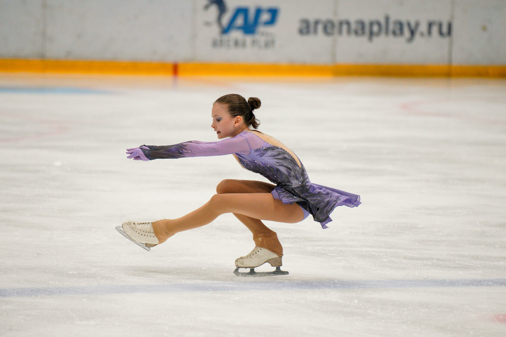
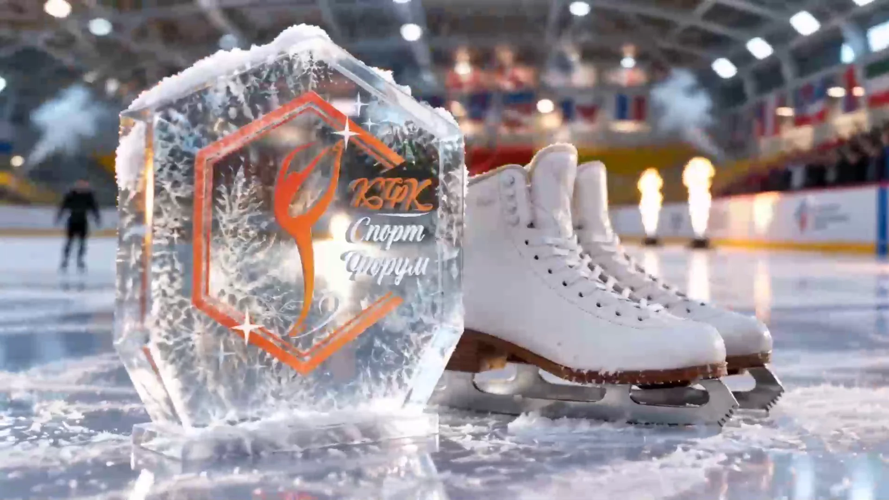

01 / ОСНОВА
Ледовая
подготовка
Чувствовать лёд. Управлять движением. Осваивать скольжение, прыжки и вращения — от базовых элементов до соревновательных программ.
От первого скольжения — к своему совершенству.
Техника, характер и свобода движения.
Однажды вы выходите на лёд.
И открываете в себе больше, чем ожидали.
В «СпортФоруме» мы соединяем точность спортивной подготовки с выразительностью фигурного катания. Помогаем почувствовать опору, освоить технику и найти свой стиль — без спешки, но с ясной целью.
От первых уверенных шагов до прыжков, вращений и выступлений: ваш маршрут строится вокруг уровня подготовки и личных задач.
Найти свою программу
ДЕТАЛИ, ИЗ КОТОРЫХ РОЖДАЕТСЯ МАСТЕРСТВОПодготовка к соревнованиям
и выполнению спортивных разрядов
Шесть направлений, которые работают вместе.
Выбираем нагрузку под вашу подготовку,
развиваем навыки последовательно.
Чувствовать лёд. Управлять движением. Осваивать скольжение, прыжки и вращения — от базовых элементов до соревновательных программ.
Сила, координация и выносливость. Укрепляем мышечный корсет и голеностоп, развиваем скорость и основу для уверенного прыжка.
Техника вне льда: базовые и многооборотные прыжки, туры, выезды и вращения с тренажёрами. Работаем над скоростью и точностью.
Красота начинается с осанки. Классические позиции, работа корпуса и рук, музыкальность и чувство ритма — для выразительного катания.
Постепенно развиваем гибкость и контроль тела. Учимся удерживать позиции, необходимые для красивых спиралей и устойчивых вращений.
Музыка, образ, движение — в одной истории. Создаём программу персонально, помогаем с выбором костюма, шлифуем детали в группе.
От «не могу» — к «попробую ещё».
Замечаем каждый шаг.
Обсуждаем опыт, цели и комфортный ритм тренировок.
Соединяем занятия на льду, физическую подготовку и хореографию.
От уверенного скольжения к новым элементам, программам и соревнованиям.
Тренируемся на двух ледовых площадках.
Выберите удобную локацию —
и сделайте лёд частью своей жизни.

Холодный лёд.
Тёплая команда.
Подберём группу, площадку и удобное время. Стоимость и условия абонемента зависят от формата и интенсивности занятий.
Уточнить расписаниеАктуальное время тренировок и наличие мест уточняйте у администратора. Мы поможем выбрать занятия под ваш уровень.
Подобрать занятияДа. В клубе есть подготовка с нулевого уровня. Позвоните или подготовьте обращение ниже — обсудим ваш опыт и подходящий формат занятий.
Работа на льду, общая и специальная физическая подготовка, хореография, стретчинг и статика. Состав и интенсивность занятий определяются программой группы.
Программа создаётся на персональных тренировках. Вместе с тренером выбирают музыку и образ, продумывают элементы и костюм. На групповых занятиях отрабатывают уже поставленную программу.
Клуб готовит воспитанников к соревнованиям ФФКМ и любительским турнирам. Допуск к конкретному старту и возможность выполнения разряда зависят от уровня спортсмена и регламента соревнований.
Стоимость зависит от площадки, формата и количества тренировок. Актуальные цены и условия абонементов можно узнать по телефону +7 (925) 354-1430.
Наш клуб — член Федерации фигурного катания Москвы
и часть Реестра спортивных организаций города.
Документы открыты: посмотрите сертификат онлайн.
Расскажите немного о себе.
Подберём точку старта — и будем рядом
на каждом новом повороте.
Клуб фигурного катания СПОРТФОРУМ
Молодогвардейская ул., 63–65